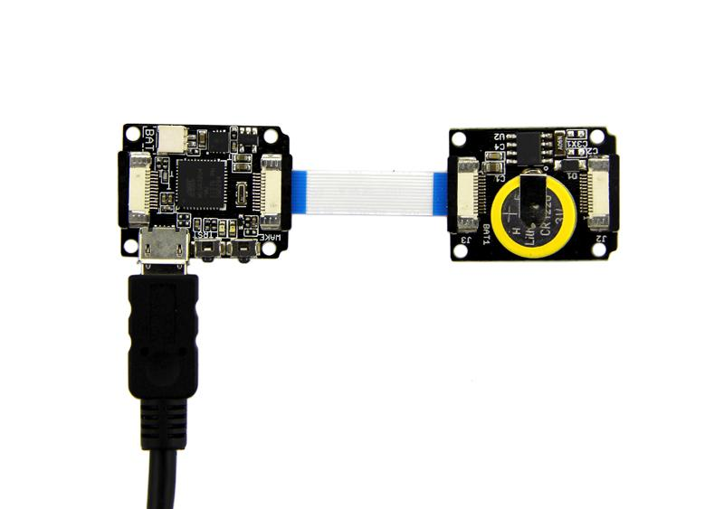
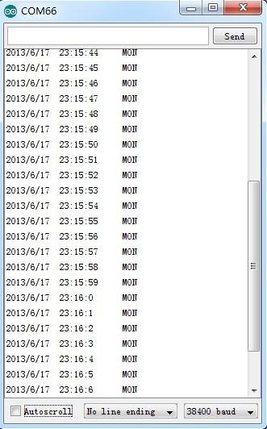

Sometimes, you always want to know what time it is. Whether I have missed the dating or not, or if it is the mealtime for my three months child. The RTC module can provide you a real-time clock. You can make the controller ask the module: hi,buddy, what time it is. At the same time, do not forget to install a small coin cell which can serve you for more than six mouths.
In order to gain a robust performance, you must put a 3-Volt CR1220 lithium cell in the battery-holder. If you use the primary power only, the module may not work normally, because the crystal may not oscillate.
The following sketch demonstrates a simple application of setting the time and reading it out.
Hardware Installation:

Note: when connect Xadow RTC to Xadow Main Board, you should concern about the connection direction. The connection method is that the unfilled corner of one Xadow module need to connect to the right angle of another module(see four corners of each Xadow module).
Demo code as show below:
#include <Wire.h>
#define DS1337_CTRL_ID 0x68
unsigned char second,minute,hour;
unsigned char week,day,month;
unsigned int year;
void setup()
{
Wire.begin();
Serial.begin(38400);
while (!Serial) {
; // wait for serial port to connect. Needed for Leonardo only
}
fillByYMD(2013,6,17);//Jun 19,2013
fillByHMS(23,15,43);//23:15 43"
fillWeek(1);//Monday
setTime();
}
void loop()
{
readTime();
Serial.print(year+2000, DEC);
Serial.print("/");
Serial.print(month, DEC);
Serial.print("/");
Serial.print(day, DEC);
Serial.print(" ");
Serial.print(hour, DEC);
Serial.print(":");
Serial.print(minute, DEC);
Serial.print(":");
Serial.print(second, DEC);
Serial.print(" ");
switch (week)// Friendly printout the weekday
{
case 1:
Serial.print("MON");
break;
case 2:
Serial.print("TUE");
break;
case 3:
Serial.print("WED");
break;
case 4:
Serial.print("THU");
break;
case 5:
Serial.print("FRI");
break;
case 6:
Serial.print("SAT");
break;
case 7:
Serial.print("SUN");
break;
}
Serial.println(" ");
delay(1000);
}
/*Function: Read time and date from RTC */
void readTime(void)
{
// use the Wire lib to connect to tho rtc
// reset the register pointer to zero
Wire.beginTransmission(DS1337_CTRL_ID);
Wire.write(0x00);
Wire.endTransmission();
// request the 7 bytes of data (secs, min, hr, dow, date. mth, yr)
Wire.requestFrom(DS1337_CTRL_ID, 7);
// A few of these need masks because certain bits are control bits
second = bcdToDec(Wire.read() & 0x7f);
minute = bcdToDec(Wire.read());
hour = bcdToDec(Wire.read() & 0x3f);// Need to change this if 12 hour am/pm
week = bcdToDec(Wire.read());
day = bcdToDec(Wire.read());
month = bcdToDec(Wire.read());
year = bcdToDec(Wire.read());
}
/*Function: Write the time that includes the date to the RTC chip */
void setTime(void)
{
Wire.beginTransmission(DS1337_CTRL_ID);
Wire.write(0x00);
Wire.write(decToBcd(second));// 0 to bit 7 starts the clock
Wire.write(decToBcd(minute));
Wire.write(decToBcd(hour)); // If you want 12 hour am/pm you need to set bit 6
Wire.write(decToBcd(week));
Wire.write(decToBcd(day));
Wire.write(decToBcd(month));
Wire.write(decToBcd(year));
Wire.endTransmission();
}
unsigned char decToBcd(unsigned char val)
{
return ( (val/10*16) + (val%10) );
}
//Convert binary coded decimal to normal decimal numbers
unsigned char bcdToDec(unsigned char val)
{
return ( (val/16*10) + (val%16) );
}
void fillByYMD(unsigned int _year, unsigned char _month, unsigned char _day)
{
year = _year-2000;
month = _month;
day = _day;
}
void fillWeek(unsigned char _dow)
{
week = _dow;
}
void fillByHMS(unsigned char _hour, unsigned char _minute, unsigned char _second)
{
// assign variables
hour = _hour;
minute = _minute;
second = _second;
}
fillByYMD(2013,6,17);//Jun 17,2013 fillByHMS(23,15,43);//23:15 43" fillWeek(1);//Monday

The output time is changing like the clock. Once you set a time, RTC will update the clock time data constantly. Then you need to comment out the code as show below and re-upload. A Real-Time Clock appears .
//setTime();